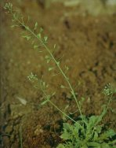
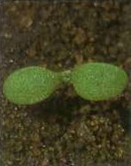

PÁSZTORTÁSKA
CAPSELLA BURSA-PASTORIS (L.) Medis. (CAPBP)
ÉLETFORMA: T1
TERMÉS: A becőke háromszög vagy szív alakú. Alulról
nyíló, válaszfalának két oldalán ülnek a magvak. A mag hosszúkás, elliptikus vagy
tompán négyszögletes, összenyomott. Sárgásbarna vagy pirosbarna színű, finoman
érdes, gyengén fénylő, 0,9-1,2 mm hosszú, 0,7-1,0 mm széles. Ezermagtömege
0,10-0,16 g. Egy növény magtermése 2000-4000 db között változik. A magvak
csírázóképességüket sokáig megőrzik még akkor is, ha az állatok
bélcsatornáján mennek keresztül.
CSÍRANÖVÉNY: Sziklevelei kicsinyek, 2-3 mm
hosszúak, kerekdedek, nyelesek. Az első lomblevelek kerekdedek, ép szélűek, a
későbbiek lándzsásak és tagoltak lesznek, egyszerű fedő és csillagszőrösek.
KIFEJLETT NÖVÉNY: Egyéves, erős orsógyökerű, 10-70 cm
magas. Levelei kezdetben tőlevélrózsát alkotnak, igen változatos alakúak. Néha
teljesen épek, legtöbbször szárnyasan hasogatottak vagy szeldeltek. A tőlevelek
nyélbe keskenyedők, a szárlevelek ülők, fülesek. A füzérvirágzat érésig igen
hosszúra nyúlik, alul már érett terméseket hordoz, felül még bimbókat és
virágokat visel. Virágzó példányai tavasztól őszig megtalálhatók. Legnagyobb
mennyiségben ősszel kel, tőlevélrózsával áttelel, és az első fagymentes napokon
fejlődésnek indul. A keresztes virágú kultúrnövények rovar- és gombakártevőinek
gazdanövénye. Az állatok kellemetlen íze és szaga miatt nem szívesen fogyasztják, a
tej hagymaszagot kap tőle. Főleg évelő pillangósokban okoz jelentős károkat.
ELTERJEDÉSE: Elterjedt egész Európában és a világ
szinte minden mezőgazdaságilag művelt területén. Humuszban gazdag agyag és
homoktalajokon egyaránt előfordul.
 |